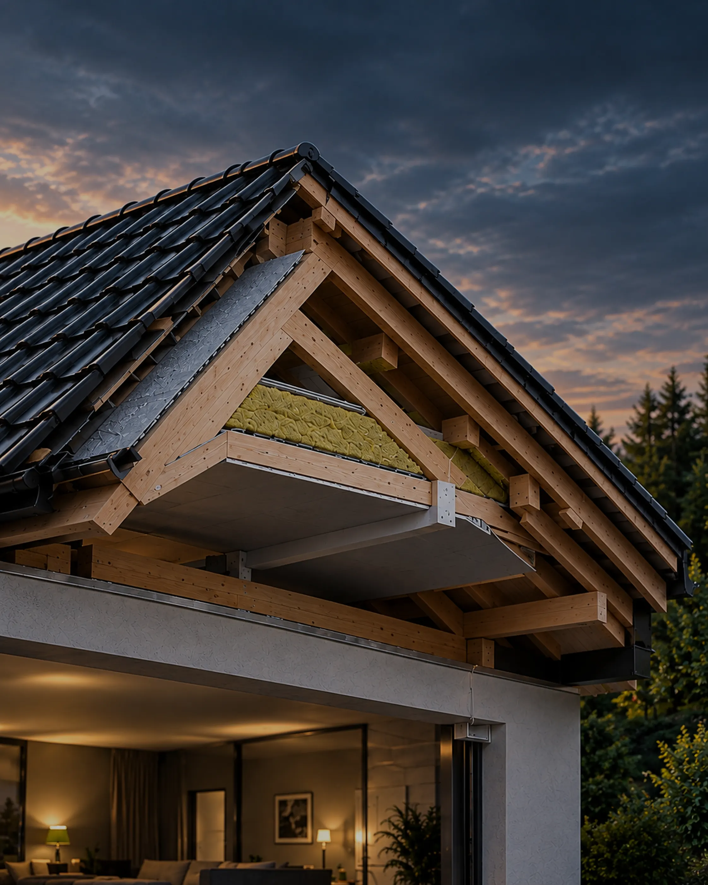
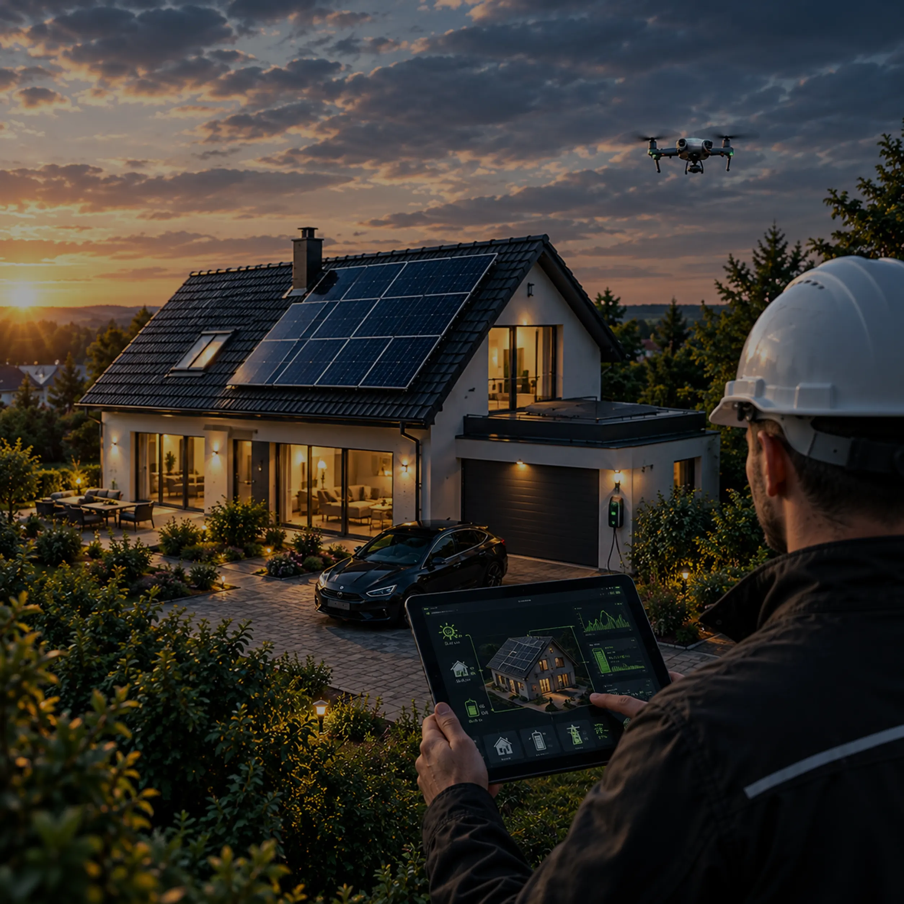

Kdy je posudek nutný, co zkoumá, kdo ho smí zpracovat a jak rozpoznat kvalitní výstup.
Statický posudek je odborné posouzení, které ověří, jestli nosná konstrukce střechy unese váhu fotovoltaické elektrárny včetně sněhu a větru, které na ni budou dodatečně působit. Bez posudku hrozí riziko přetížení konstrukce, průhybů, poškození krytiny nebo v krajním případě statické poruchy střechy.
U bytových domů se statický posudek prakticky vždy vyplatí zpracovat, protože instalace FVE mění zatížení nosné konstrukce, která bývá běžně vnímaná jako hotová a neměnná věc.
Česká asociace pojišťoven doporučuje zpracovat statické posouzení i tam, kde není potřeba stavební povolení.
Statik posuzuje střechu ve dvou stavech — před instalací a po ní — a kontroluje tyto hlavní věci:

Posudek musí zpracovat autorizovaná osoba — inženýr s autorizací ČKAIT v oboru statika a dynamika staveb, ne firma, která panely prodává nebo montuje. Objednat ho je potřeba na začátku, ideálně ještě před podpisem smlouvy s dodavatelem FVE — výsledek posudku totiž může ovlivnit, kolik panelů střecha unese, kam je lze umístit, nebo jaký kotvicí systém zvolit.
Jde o obor IS00 (statika a dynamika staveb) podle zákona č. 360/1992 Sb. Posudek musí nést autorizační razítko.
Posudek končí jedním ze tří závěrů:
Střecha zvládne navrhovanou zátěž bez úprav, projekt pokračuje podle původního návrhu.
Nejčastější výsledek — typicky omezuje počet nebo rozmístění panelů, předepisuje konkrétní způsob kotvení nebo vyžaduje lokální zesílení konstrukce.
V navrhované podobě projekt nelze realizovat — je potřeba konstrukci zesílit, snížit počet panelů nebo zvolit lehčí systém.
Závěr obvykle obsahuje také doporučení pro umístění a rozmístění panelů vzhledem ke statické rezervě a případný popis stavebních úprav na zesílení konstrukce.
Pokud střecha v základním výpočtu plně nevyhoví, neznamená to automaticky konec projektu. Statik může navrhnout jiné rozmístění panelů, zesílení konstrukce nebo lehčí systém. Zda je přípustná i podmínka údržby, například odklízení sněhu, rozhoduje statik v posudku. SVJ by se k ní mělo zavázat jen s vědomím, že ji bude muset trvale plnit. Zatížení sněhem závisí na sněhové oblasti a je mnohonásobně vyšší než zatížení od samotné FVE.
Forma posudku se odvíjí od stáří budovy a dostupnosti projektové dokumentace.
Nejjednodušší a nejrychlejší varianta pro budovy, kde existující dokumentace nebo stav střechy nevylučují FVE, ale nosnost má omezenou rezervu. Statik vydá vyjádření s podmínkou: SVJ se zaváže k pravidelnému odklízení mokrého sněhu, čímž kritické zatížení nenastane. Podmínka musí být zapracována do smlouvy a provozního řádu domu.
Pro novější budovy, kde existuje původní projektová dokumentace nebo typové podklady. Statik přepočítá nosnou konstrukci s přidaným zatížením z dostupných podkladů a jejich shodu se skutečným stavem ověří prohlídkou střechy na místě. Výsledkem je plnohodnotný posudek s jednoznačným závěrem.
Nezbytný u starších budov bez dochované dokumentace. Statik provede fyzickou prohlídku a zaměření konstrukce: průřezy krokví, stav dřeva, způsob kotvení. Teprve z naměřených hodnot sestaví výpočetní model. Jde o nejnákladnější variantu, ale u předválečných domů nebo budov se zaniklou dokumentací je to jediná cesta k prokazatelnému výsledku.

Zvýšená obezřetnost je namístě, pokud dodavatel tvrdí, že střecha vyhovuje pouze ústně, nabízí posudek od jiného podobného domu, nebo posudek vznikl bez fyzické prohlídky střechy.
Informace vycházejí ze stavebního zákona č. 283/2021 Sb. ve znění novel účinných od 1. 8. 2025, vyhlášky č. 131/2024 Sb., zákona č. 360/1992 Sb., ČSN EN 1991-1-3, doporučení České asociace pojišťoven (2024), příručky Solární asociace Protipožární bezpečnost u střešních solárních elektráren (2026) a odborných prezentací ČVUT (Defekty budov 2023).
Proč je to důležité
Statický posudek ověří, že střecha zatížení unese, a dokládá, že se instalace navrhovala odpovědně. Česká asociace pojišťoven doporučuje posudek zpracovat i tehdy, když povolení není potřeba.
Nenašli jste odpověď na svou otázku na této stránce?
Zkuste vyhledat dané téma na webu.